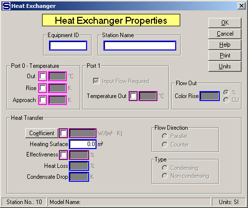

Equipment ID An equipment ID of up to 11 characters can be used to identify the station with an actual station in the process. Any combination of numbers and letters that are used in the factory/refinery to identify equipment can be entered. For example, Equipment ID = 123.456A. It is not necessary to make an entry in the Equipment ID field if the station in the model does not have a corresponding station in the factory/refinery.
Station Name A name of up to 20 characters must be entered for the station. For example, Station Name = 2nd Carb. Heaters.
Port 0 - Temperature Out, Rise, and Approach entries control the port 0 flow out temperature to the value entered and cause the port 1 flow in to be a required flow unless the Port 1 “Input Flow Required” check box is unchecked. If the port 1 flow is steam/vapor and the port 1 input flow is required, Sugars will calculate the required quantity of steam/vapor to give the specified temperature. Also, a value must be entered for either the effectiveness or the heat transfer coefficient and heating surface if the port 1 flow is a liquid (e.g., condensate) instead of steam or vapor. Magenta colored borders on the entry fields are used to indicate that only one of the entries can be selected; that is, when one is selected the others are not accessible.
Out Temperature of the port 0 flow out; for example, Out = 90.0 (flow out = 90°C).
Rise Temperature increase in the port 0 flow going through the heat exchanger; for example, Rise = 7.5.
Approach Difference between the port 1 flow out (T1o) and the port 0 flow out (T0o) temperatures; for example, Approach = 5.5°C (T1o-T0o = 5.5°C). Value can be less than 0.0; for example, Approach = -7.5°C.
Port 1 Flow into port 1 can be made either a required flow (quantity of port 1 flow is to be calculated by Sugars), or a not required flow when the quantity of the port 1 flow is known. Also, a temperature out can be specified to calculated the effectiveness and/or the heat transfer coefficient for heat exchanges with known input and output temperatures.
Input Flow Required This is the normal selection when a temperature value is entered. Sugars will calculate the quantity of the flow into port no. 1 when the "Input Flow Required" check box is checked. Uncheck the box when the quantity of the input flow is known and port 1 output flow temperature is to be calculated by Sugars.
Temperature Out Enter an output temperature for the port 1 flow when temperature values for the output flows are known and the heat transfer coefficient is to be calculated. Selecting Temperature Out will cause the port 1 input flow to be a required flow. Normally, this is used for liquid-liquid heat exchange.
Heat Transfer Entries for the heat transfer are used when the output flow temperatures are to be calculated and known port 0 and port 1 flows go to the heat exchanger, or when the port 1 flow isn't steam/vapor and a port 0 output flow temperature is specified. Also, Sugars will calculate the steam/vapor flow to the heat exchanger if the heat exchanger condenses the port 1 steam/vapor. If a Coefficient is entered, a Heating Surface entry must be made. Sugars will use the saturation temperature (not the actual superheated temperature) for heat transfer coefficient (LMTD) calculations (but the total enthalpy is used) if the port 1 input flow is superheated vapor; however, for effectiveness calculations, the actual port 1 input flow temperature is used.
Coefficient Enter a heat transfer coefficient for the heat exchange between port 0 and port 1 flow streams across the Heating Surface. For example,
Heat Transfer Coefficient = 455 Watts/m2-°C
Heat Transfer Coefficient = 80.1 BTU/h-ft2-°F
Heating Surface Enter the Heating Surface area (in units shown) for the heat exchanger. If a Heat Transfer Coefficient is input, a Heating Surface entry must be made. For example,
Heating Surface = 35 m2
Heating Surface = 376.7 ft2
Effectiveness (%) Enter Effectiveness in percent (%) for transfer of heat between hot and cold flow streams. Effectiveness equals the ratio of actual heat transfer to the maximum possible heat transfer between the flow streams, and the actual input temperatures are used - not vapor saturation temperature if the input flow is superheated steam. The amount of actual heat transferred is the amount of heat given to the flow being heated. Heat loss is considered and it is heat lost from the transfer of heat from the hot flow to the cold flow. Use effectiveness to have Sugars calculate output flow temperatures when known port 1 and port 0 flows go to the heat exchanger, or when the port 1 flow isn't a steam/vapor and a port 0 output flow temperature is specified. High values of effectiveness depend on large heat transfer coefficient and heating surface area and low flow rates to give a large Number of Transfer Units (NTU). For example,
Effectiveness = 30% (shell and tube)
Effectiveness = 60% (plate type)
Heat Loss (%) Enter the Heat Loss in percent (%) for the heat that is lost in the heat exchanger station. The heat loss is the percentage loss of heat from the total heat that is transferred to the cold flow from the hot flow. For example, Heat Loss = 0.5% to give 1/2% of heat loss.
Condensate Drop Enter a temperature drop for the condensate (port 1flow out) if it leaves the heat exchanger with a temperature that is lower than the saturation temperature for the condensate. For example, if the vapor saturation temperature for the vapor flow into the heat exchanger is 119°C and condensate leaves the heat exchanger at 115°C, then Condensate Drop = 4.0K. The heat lost from the condensate is considered for the heat transferred to the port 0 flow.
Flow Direction Select either counter (counter-current) or parallel (co-current) flow between port 0 and port 1 flow streams.
Type The heat exchanger can be either condensing, or non-condensing. Condensing is used when the port 1 flow is steam or vapor and all of the steam or vapor is condensed in the heat exchanger. Sugars can calculate the output temperature using the coefficient and heating surface values knowing that all of the steam will condense.